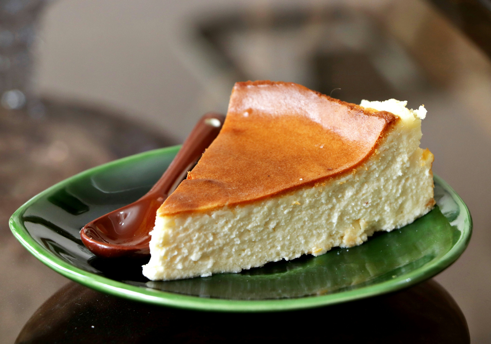

Tarta de queso al horno

Tiempo: 60 minutos
Dificultad: Fácil
Raciones: 8 personas
Ingredientes
- 600 g de queso crema
- 4 huevos
- 200 ml de nata para montar
- 150 g de azúcar
- 1 cucharada de harina
Preparación
- Precalentar el horno a 200°C.
- Mezclar todos los ingredientes.
- Verter la mezcla en un molde.
- Hornear durante 40 minutos.
- Dejar enfriar antes de servir.
Temporizador de cocina
40:00